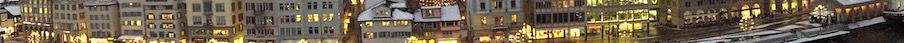

Professor Emeritus
Computer and Information Sciences
St. Ambrose University 518 W. Locust St. Davenport, IA 52803
I retired from St. Ambrose University in the Spring of 2026 after 25 years of service. I am now enjoying traveling the country and visiting friends and family.